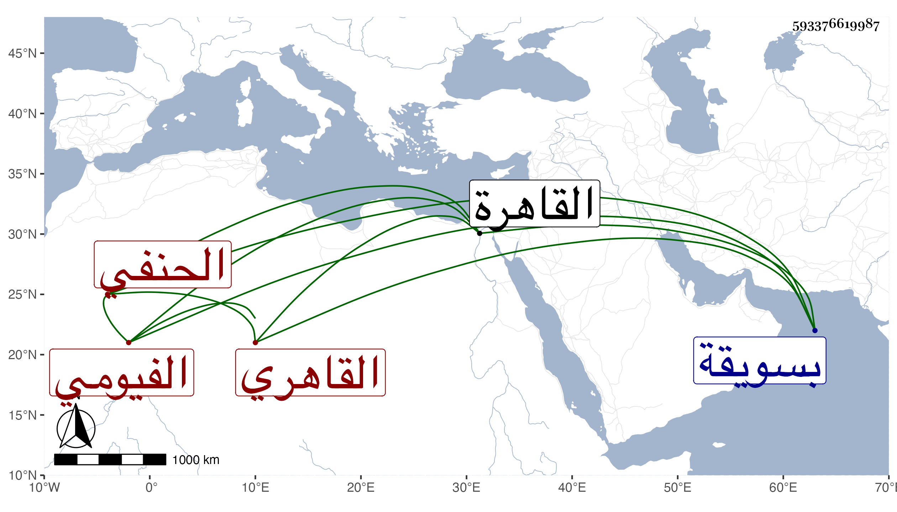

0902Sakhawi.DawLamic.ITO20230111-ara1.EIS1600.593376619987
Biography ID: 593376619987
1072
علي بن محمد بن علي بن محمد بن علي الفيومي الأصل القاهري الحنفي . ولد في سنة خمس وخمسين وثمانمائة بسويقة صفية من القاهرة ونشأ فحفظ القرآن والكنز وقال أنه عرضه على الأمين الأقصرائي والزين قاسم واشتغل عند أبي الخير ابن الرومي والصلاح الطرابلسي ونحوهما بل قرأ على الشمس الغزي القاضي واستنابه في آخر أيامه ولم يباشر عنه بل باشر عن الأخميمي وخالط فيروز الجمالي لمجاورته له فلما استقر في الزمامية لزمه ، وحج غير مرة أولها سنة خمس وسبعين وجاور مرارا وسمع مني المسلسل واليسير من بعض تصانيفي . )
